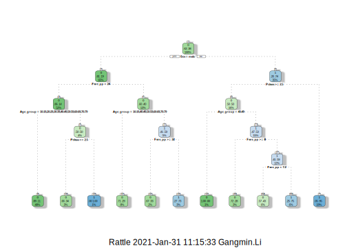

1.4 The Rational Decision Tree for Titanic
Now let us use our re-engineered train dataset to train our classifier to see how could we improve our prediction results.
We firstly use all the attributes: Pclass, Title, Sex, Age_group,,Group_size, Ticket_class, Fare_pp, Deck, HasCabinNum and Embarked. We somehow escape Name and Ticket.
# The full-house classifier apart from name and ticket
RE_data <- read.csv("RE_data.csv", header = TRUE)
model3 <- rpart(Survived ~ Pclass+Title+Sex +Age_group+Group_size+Ticket_class+Fare_pp+Deck+HasCabinNum + Embarked,
data=RE_data[1:891,],
method="class")
Prediction3 <- predict(model3, RE_data[892:1309,], type = "class")
submit3 <- data.frame(PassengerId = RE_data[892:1309,1], Survived = Prediction3)
write.csv(submit3, file = "myReEngineeredResult.CSV", row.names = FALSE)We have produced a new prediction with new model. You can submit to Kaggle for an evaluation. You may find it has a pretty bed score (0.75598)! It even worse than the decision tree with only lookin gin to sex!!! Let us examine our classifier again by plot it in a graph.
# plot our full house classifier
prp(model3, type = 0, extra = 1, under = TRUE)
fancyRpartPlot(model3)Figure 1.5: Decision trees.
We can see from the tree, the first test condition is "title = Mr". We know that there are large number of passengers are male adult and most of them are perished. However, we can see from our decision tree (left branch) that there are two further test conditions are “Ticket_class” and “Deck” numbers. Our tree end with 2 leafs are survived and one is dead. The purity on the leads are not very high, the highest is 39:366 and the lowest is 1:2. However we know that the most powerful predictor Sex and pclass has not been used. That could be an explanation of the poor performance. We will demonstrate the detailed interpretation of the model in the later chapter of report.
Let us look into the difference between the last two predictions,
# build a comparison data frame to record each prediction results
compare <- data.frame(test$PassengerId, predict2 = Prediction2 , predict3 = Prediction3)
# Find differences
dif2 <- compare[compare[2] != compare[3], ]
#show dif
dif2## test.PassengerId predict2 predict3
## 19 910 0 1
## 20 911 1 0
## 22 913 0 1
## 34 925 0 1
## 42 933 0 1
## 50 941 1 0
## 65 956 0 1
## 73 964 0 1
## 74 965 0 1
## 99 990 0 1
## 126 1017 1 0
## 147 1038 0 1
## 154 1045 1 0
## 158 1049 0 1
## 159 1050 0 1
## 162 1053 0 1
## 166 1057 0 1
## 182 1073 0 1
## 193 1084 0 1
## 195 1086 0 1
## 198 1089 0 1
## 207 1098 1 0
## 237 1128 0 1
## 243 1134 0 1
## 245 1136 0 1
## 246 1137 0 1
## 285 1176 0 1
## 310 1201 1 0
## 314 1205 1 0
## 340 1231 0 1
## 345 1236 0 1
## 346 1237 0 1
## 348 1239 1 0
## 355 1246 0 1
## 356 1247 0 1
## 384 1275 1 0
## 393 1284 0 1
## 405 1296 0 1
## 413 1304 0 1
## 418 1309 0 1There are 40 different predictions in comparison with the second prediction model. Let us see if we can improve on this.
Let us consider the correlation analysis and PCA analyses results. We only use three most related attributes: Sex, Pclass, Fare_pp, and Age_group.
model4 <- rpart(Survived ~ Sex + Fare_pp + Pclass + Age_group,
data=RE_data[1:891,],
method="class")
Prediction4 <- predict(model4, RE_data[892:1309,], type = "class")
submit4<- data.frame(PassengerId = RE_data[892:1309,1], Survived = Prediction4)
write.csv(submit4, file = "myShortReEngineeredResult.CSV", row.names = FALSE)We do the same to understand what went wrong.

After submit to Kaggle and the feedback was no improvement and even get a worse score (0.75358). Let us look into the difference between the last two predictions,
# build a comparison data frame to record each prediction results
compare <- data.frame(test$PassengerId, predict3 = Prediction3 , predict4 = Prediction4)
# Find differences
dif <- compare[compare[2] != compare[3], ]
#show dif
dif## test.PassengerId predict3 predict4
## 896 896 1 0
## 913 913 1 0
## 915 915 0 1
## 925 925 1 0
## 926 926 0 1
## 933 933 1 0
## 942 942 0 1
## 956 956 1 0
## 960 960 0 1
## 972 972 1 0
## 982 982 1 0
## 986 986 0 1
## 996 996 1 0
## 1009 1009 1 0
## 1038 1038 1 0
## 1050 1050 1 0
## 1051 1051 1 0
## 1053 1053 1 0
## 1084 1084 1 0
## 1093 1093 1 0
## 1098 1098 0 1
## 1106 1106 0 1
## 1117 1117 1 0
## 1128 1128 1 0
## 1134 1134 1 0
## 1136 1136 1 0
## 1137 1137 1 0
## 1141 1141 1 0
## 1155 1155 1 0
## 1173 1173 1 0
## 1175 1175 1 0
## 1176 1176 1 0
## 1183 1183 1 0
## 1198 1198 0 1
## 1199 1199 1 0
## 1205 1205 0 1
## 1215 1215 0 1
## 1223 1223 0 1
## 1225 1225 1 0
## 1227 1227 0 1
## 1231 1231 1 0
## 1236 1236 1 0
## 1239 1239 0 1
## 1246 1246 1 0
## 1247 1247 1 0
## 1284 1284 1 0
## 1296 1296 1 0
## 1301 1301 1 0
## 1309 1309 1 0The point I guess is the decision tree will not improved with more attributes and also our re-engineered dataset does not improve on the prediction.